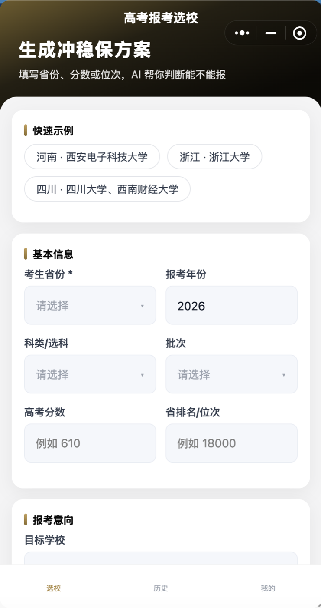
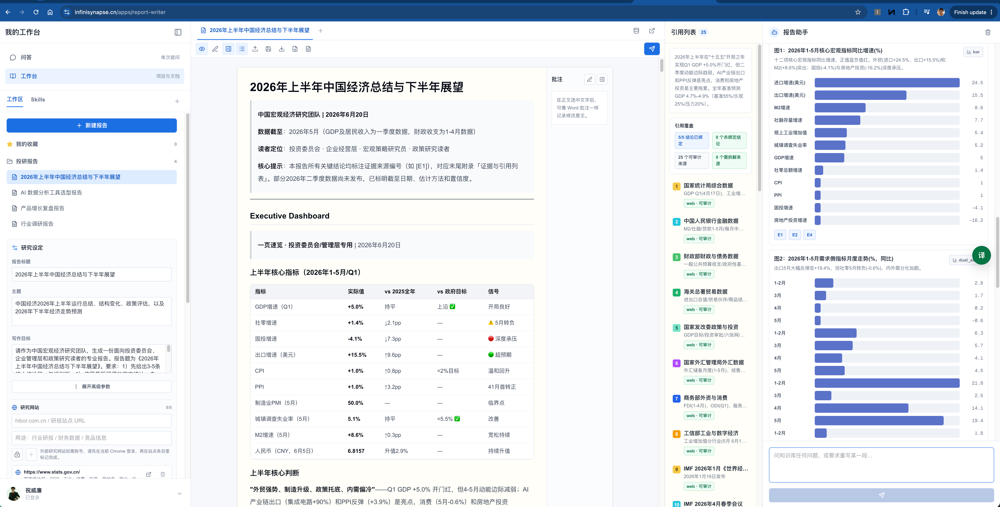
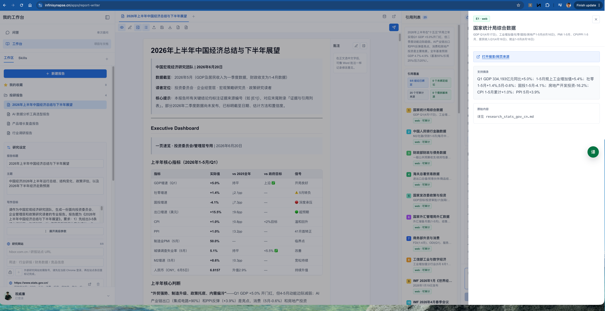
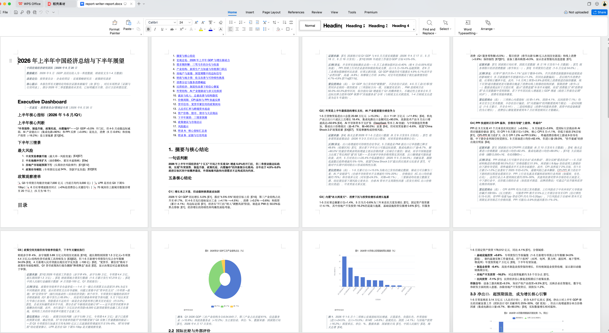
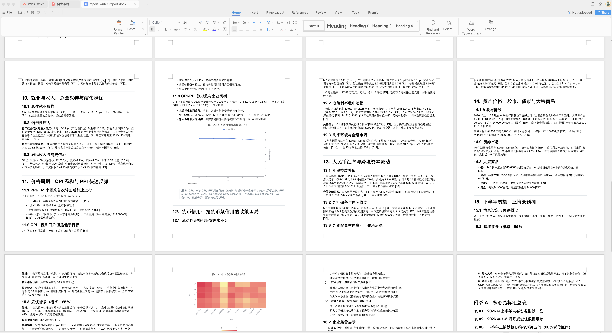

POINT 01
Data Agent 全栈
自研 Agent、分析语言、分布式执行引擎和知识库四大基础层。
支持 SaaS、桌面端和纯私有化。
POINT 02
Data Infra + Vibe Coding
InfiniSynapse 提供数字分析师池。
行业专家通过 Vibe Coding 调度分析师，把 know how 做成稳定应用。
INFINISYNAPSE
AI Native Data Agent / Data Infra
让懂行业 know how 的专家，结合 Vibe Coding，快速构建可高并发、稳定对外服务的数据应用。
01
INFINISYNAPSE
POINT 01
自研 Agent、分析语言、分布式执行引擎和知识库四大基础层。
支持 SaaS、桌面端和纯私有化。
POINT 02
InfiniSynapse 提供数字分析师池。
行业专家通过 Vibe Coding 调度分析师，把 know how 做成稳定应用。
04
PROBLEM · 现状困局
企业业务数据散落在业务系统、CRM、财务、运营、产品、文件台账等多个系统。当前主流路径大致分为几类,但都很难同时解决跨库、跨数据类型、复杂分析和安全边界问题。
采集 → 清洗 → 建模 → 数仓 → 报表,动辄 3–6 个月,投入数十万至百万。一线想法刚提出,排期已到下季度。且强依赖提前的数据治理、指标建模和报表开发。
真实 200+ 表场景准确率断崖式下降。也不支持跨库、跨数据类型的联合计算,仍需要提前完成数据治理和语义建模。
Python 更适合离线探索和小范围建模,不适合作为 Data Agent 的长期分析运行时。把数据拉进内存后,百万行级即成瓶颈;跨库、状态管理、并发计算和复杂代码逻辑,都会消耗 AI 的注意力。
03B
CURRENT · 主流路径一:NL2SQL
代表玩家:Vanna 2.0、Chat2DB、阿里 Quick BI 智能小Q、各类 NL2SQL / Text2SQL 框架。
03C
CURRENT · 主流路径二:Python 沙箱
代表玩家:Julius AI、Fabi.ai、Hex Notebook Agent、camelAI、Claude Code。
03D
CURRENT · 当前较为先进的实现
代表玩家:Databricks Genie Agent Mode、Snowflake Cortex Analyst。已经采用 Agentic Loop,但只能在自家生态内跑。
CURRENT STATE · 现状小结
不是模型不够强,而是底层数据架构没有为 Agent 重新设计。
要么翻译一条 SQL,要么把数据拉进 Python,要么绑死数仓生态。
06
Data Infra
09A
WHY · 完美契合 Agentic
04B
CATEGORY · Data Agent 三大挑战
01
同一个"收入"可能叫 ARR、确认收入、净收入、rev_recognition_fact。第一能力不是生成 SQL,而是找到真正相关的数据资产。
02
旧文档、认证指标、看板、Notebook 可能同时存在。最危险的错误是代码没报错、数字也算出来了,但口径错了。
03
Data Agent 没有 unit test 告诉它答案是否正确。可靠性必须来自系统设计:证据链、口径链、中间结果和不可回答边界。
财务季度? 净收入? 华东口径? 数据是否完整? 是否可回答?
04C
REQUIREMENT · 完整 Data Agent 必须具备
在大表空间和多文档里定位候选资产。
识别认证指标、业务规则和历史经验。
跨源执行、计算下推、保留事实表。
每一步变成下一步可复用的中间资产。
报告、图表、SQL 轨迹和证据链可审计。
这就是为什么 Data Agent 不能靠"LLM + SQL 客户端"完成,而必须重做运行时、语言、知识和执行引擎。
04D
SOLUTION · InfiniSynapse 的解法
大表空间、大文档空间、大历史分析空间里,关键词搜索和单次 RAG 都不够。
子 Agent 并发探索 schema、样本、关联路径和历史经验,把搜索拆成可并行、可核对的任务。
不先等语义层建完,系统先探索,再在使用中沉淀业务知识。
口径、指标、表含义和历史分析经验分散,且会随着业务变化。
把库表元信息、业务规则、历史分析、用户偏好绑定成可复用上下文,每次分析继续校验。
不是聊天记忆,而是结构化分析经验和数据资产上下文。
没有像测试一样的 oracle,所以过程必须天然可观测、可重放。
每条语句是一次工具调用,每个中间结果是一张具名表,报告和图表都能追溯到执行链。
取数、跨源 JOIN、ML 训练、预测、报告输出在同一条链路里完成。
06
DATA INFRA + DIGITAL ANALYSTS
INDUSTRY EXPERT
Know How、快速 Vibe 交互界面和业务逻辑。
连接数据库、API、文件和业务系统。
生成查询、拆解指标、追溯结果。
检索文档、整理证据、保留引用。
选择图形、解释趋势、输出看板。
组织结构、生成结论、导出文档。
校验口径、来源、异常和一致性。
支撑数字分析师稳定运行的全套底座
DELIVERABLES
面向客户交付高并发、稳定运行、可追溯的应用能力。
 微信小程序
微信小程序
06A
DEPLOYMENT · 模型对应分析师级别
L1
Qwen3.6-27B / V4 Flash
1 台 8 卡 L40
5–30 人试点
L2
DeepSeek V3.1 / V3.2
1 台 8 卡 H100/H200
30–100 人主力
L3
DeepSeek V4 Pro
8 卡 B200 / H200
100+ 人大型企业
L4
GPT-5.5 / Claude Opus 4.7
API 混合云增强
顶级分析需求
KEY JUDGMENT
L1 覆盖日常取数;报告撰写、复杂归因、多步推理、机器学习建模,建议至少上 L2。
WHY IT WORKS
InfiniSQL + InfiniRAG + Agent 编排收住复杂度;模型档位决定的是分析深度上限。
来源:《InfiniSynapse 私有部署模型选型建议》;闭源模型仅作为混合云增强档,不纳入纯私有化主力配置。
07
APPLICATIONS

输入省份、分数、位次和偏好，生成冲稳保志愿方案，直接服务高考报考场景。
每个用户将会被一个拥有历史高考数据的实习生 / 初级数据分析师服务。
Vibe Coding 负责小程序交互和业务流程，InfiniSynapse 承接数据、分析和推荐链路。
底层复用任务调度、查询执行、缓存、恢复和审计能力，面向集中访问高峰稳定运行。
可持续迭代、可连接数据源、可承载真实用户请求，具备正式对外服务的应用形态。
08
REPORT WRITER · PRODUCT

写作工作台：设定主题、材料和目录结构

来源追溯：材料、引用和证据绑定
报告快写把资料、数据、引用和行业判断组织成正式研究报告。
09
REPORT WRITER · WORD OUTPUT

Word 报告总览：章节、图表和结论完整呈现

Word 报告细节：引用、批注、附录和可复核内容
从资料整理到正文生成、来源绑定和 Word 导出，形成稳定的报告生产链路。
10
REPORT WRITER · SAMPLE DOCX
09C
CASE · CSDN
09D
CASE · 企名片
09E
CASE · 海关
直连海关生产库, 1400 张表无治理, 接入即可提问取数
09F
CASE · 海关 · 机器学习
海关风控场景正在评估 InfiniSynapse 做特征发现。内部案例暂不便公开展示, 以下用公开 UCI 数据集演示同等机器学习能力 —— Agent 自主完成加载、特征工程、训练与评估。
92秒
从提问到出评分卡全流程
0.7712
AUC —— 超 XGBoost 基线 0.7611
100%
可解释 —— 评分卡规则可追溯
可类比海关场景:风险特征发现、异常行为识别、通关信用评分
-- InfiniSQL ScoreCard SOTA Challenge - UCI Credit Card Default
-- test AUC = 0.7712 / KS = 0.4288 -- 超越 XGBoost 文献 0.7611
set DATASET_PATH="/data/uci_credit_card_default.csv"
options type="defaultParam";
set MODEL_PATH="/tmp/infinisql/models/fintech/uci_scorecard_sota"
options type="defaultParam";
set PRED_PATH="/tmp/infinisql/predictions/uci_scorecard_sota"
options type="defaultParam";
load csv.`${DATASET_PATH}` where header="true" and inferSchema="true"
as credit_raw_0;
-- credit_typed 来自脚本 Part 1 的 24 个字段显式 cast
-- 领域特征工程: 6 个月逾期模式 + 利用率 + 还款率 + 余额增长
select *,
greatest(PAY_0, PAY_2, PAY_3, PAY_4, PAY_5, PAY_6) as pay_max,
(case when PAY_0 >= 1 then 1 else 0 end +
case when PAY_2 >= 1 then 1 else 0 end +
case when PAY_3 >= 1 then 1 else 0 end +
case when PAY_4 >= 1 then 1 else 0 end +
case when PAY_5 >= 1 then 1 else 0 end +
case when PAY_6 >= 1 then 1 else 0 end) as pay_delinq_count,
case when LIMIT_BAL > 0 then
((BILL_AMT1 + BILL_AMT2 + BILL_AMT3 + BILL_AMT4 + BILL_AMT5 + BILL_AMT6) / 6.0) / LIMIT_BAL
else 0.0 end as util_avg,
case when BILL_AMT2 > 0 then PAY_AMT1 / BILL_AMT2 else 1.0 end as repay_ratio_m1,
case when BILL_AMT6 > 100 then BILL_AMT1 / BILL_AMT6 else 1.0 end as bill_growth
from credit_typed
as credit_feat;
select *, rand(42) as _split_key from credit_feat as credit_keyed;
select ID, LIMIT_BAL, PAY_0, PAY_2, PAY_3, PAY_4, PAY_AMT1,
pay_max, pay_delinq_count, pay_delinq_sum, recent_delinq, pay_max_recent3,
util_avg, util_m1, util_max, repay_ratio, repay_ratio_m1, bill_growth, pay_avg,
label
from credit_keyed where _split_key <= 0.70 as sota_train;
select ID, LIMIT_BAL, PAY_0, PAY_2, PAY_3, PAY_4, PAY_AMT1,
pay_max, pay_delinq_count, pay_delinq_sum, recent_delinq, pay_max_recent3,
util_avg, util_m1, util_max, repay_ratio, repay_ratio_m1, bill_growth, pay_avg,
label
from credit_keyed where _split_key > 0.85 as sota_test;
run sota_train as Binning.`${MODEL_PATH}` where
label="label" and method="EF" and numBucket="20" and goodValue="0"
and selectedFeatures="LIMIT_BAL,PAY_0,PAY_2,PAY_3,PAY_4,PAY_AMT1,pay_max,pay_delinq_count,pay_delinq_sum,recent_delinq,pay_max_recent3,util_avg,util_m1,util_max,repay_ratio,repay_ratio_m1,bill_growth,pay_avg"
as binningInfoTable;
run sota_train as ScoreCard.`${MODEL_PATH}` where
binningTable="binningInfoTable"
and selectedFeatures="LIMIT_BAL,PAY_0,PAY_2,PAY_3,PAY_4,PAY_AMT1,pay_max,pay_delinq_count,pay_delinq_sum,recent_delinq,pay_max_recent3,util_avg,util_m1,util_max,repay_ratio,repay_ratio_m1,bill_growth,pay_avg"
and scaledValue="600" and odds="50" and pdo="20" and goodValue="0"
as scorecard_train_scored;
predict sota_test as ScoreCard.`${MODEL_PATH}` where
binningTable="binningInfoTable"
and selectedFeatures="LIMIT_BAL,PAY_0,PAY_2,PAY_3,PAY_4,PAY_AMT1,pay_max,pay_delinq_count,pay_delinq_sum,recent_delinq,pay_max_recent3,util_avg,util_m1,util_max,repay_ratio,repay_ratio_m1,bill_growth,pay_avg"
as scorecard_test_scored;
run scorecard_test_scored as ScoreCard.`${MODEL_PATH}` where
action="evaluate" and labelCol="label" and scoreCol="predictedScore" and goodValue="0"
as metrics_test;
select * from metrics_test as output;数据集: UCI Default of Credit Card Clients · 学术基线 Yeh & Lien, 2009
11C
01
最快 POC 入口。顾问、创业团队和中小企业直接打开,先把价值链跑通。
02
贴近真实办公环境和本地文件边界。Excel、CSV、数据库与文档可以在本机闭环。
03
金融、政务、制造和央国企的主战场。数据、模型、推理和报告全部留在企业域内。
04
40+ tools 覆盖企业办公Office,音视频，微信飞书，以及其他Agent对接
底层 Harness 一致:同一套 Agent / InfiniSQL / InfiniRAG / 跨源引擎,覆盖 SaaS 获客、桌面端使用、私有化大单和 Agent 生态分发。
13
CO-BUILD
把数据分析放进真实业务流程，而不是只多一个聊天入口。
把投研、咨询、运营、政策、教育或数据服务 know how 做成产品。
基于 Data Infra 共建垂直应用、行业模板和私有化方案。
12A
TEAM · 祝海林
祝海林
William Zhu
联合创始人 · 长期深耕 Data Infrastructure 与 AI 的交叉领域。
12B
TEAM · 蒋涛
蒋涛
Tao Jiang
联合创始人 · CSDN 创始人,负责生态战略、渠道资源与商业化放大。
12C
TEAM · 赵伟楠
赵伟楠
Weinan Zhao
联合创始人 · 产品与增长负责人,推动 InfiniSynapse 多形态产品化落地。
INFINISYNAPSE